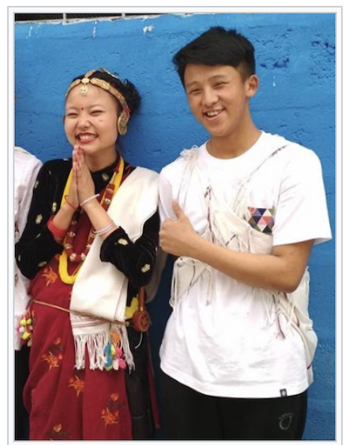

| Culture |
Traditional Nepali society is sometimes defined by social hierarchy. The Nepali caste
system embodies much of the social stratification and many of the
social restrictions found in South Asia. Social classes are defined by more than a hundred endogamous
hereditary groups, often termed as jātis, or "castes".
Nepal declared untouchability to be illegal in 1963[302] and has since enacted other anti-discriminatory
laws and social welfare initiatives.
At the workplace and educational institutions in urban Nepal, caste-related
identification has pretty much lost its importance.[citation needed] Family values are important in the Nepali tradition, and multi-generational patriarchal joint families have been the norm in Nepal, though nuclear families are becoming common in urban areas. An overwhelming majority of Nepalis, with or without their consent, have their marriages arranged by their parents or other family elders. Marriage is thought to be for life, and the divorce rate is extremely low, with less than one in a thousand marriages ending in divorce.[303] Child marriages are common, especially in rural areas; many women wed before reaching 18.[304] |

|